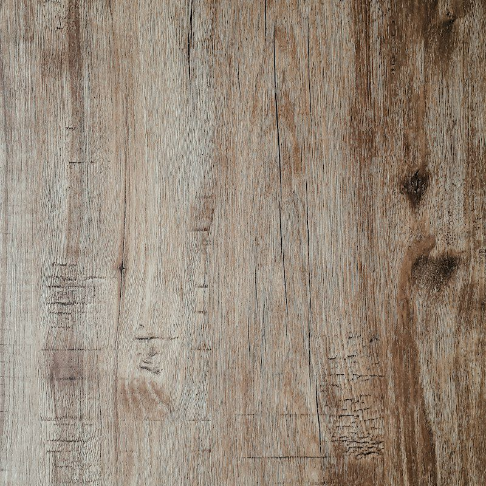

Eiken Grijs Rustiek
Verweerde grijze eik met knoesten en scheurtjes. Robuust en karaktervol.
- Type
- Plank
- Dikte
- 10 mm
- Slijtklasse
- AC5
- Formaat plank
- 1845 × 244 mm
- Inhoud per pak
- 1,80 m²
- Waterbestendig
- Ja
Bereken wat u nodig hebt
U betaalt niets online. Na uw aanvraag nemen wij contact op om alles te bevestigen.
Goed om te weten
Hoeveel laminaat heb ik nodig?
Meet de vloer in vierkante meters, tel daar snijverlies bij op en rond af naar hele pakken. Reken bij een rechte plank met ongeveer 10% extra en bij visgraat of een ruimte met veel hoeken met ongeveer 15%. Deel een L-vormige ruimte op in rechthoeken en tel die bij elkaar op.
Lees verder KiezenWaterbestendig laminaat in keuken, hal en badkamer
Waterbestendig laminaat is laminaat waarvan de kern en naden zo zijn behandeld dat gemorst of staand water een aantal uren geen zwelling geeft. Hoeveel uur precies verschilt per fabrikant. Het is geschikt voor keuken en hal, en in een badkamer alleen buiten de douchezone als de fabrikant dat toestaat.
Lees verder LeggenWelke ondervloer onder laminaat?
Onder laminaat legt u altijd een ondervloer. Op een stenen of betonnen vloer hoort daar een vochtscherm bij, los of in de ondervloer ingebouwd. Kies verder op drie punten: hoeveel oneffenheid de ondervloer moet opvangen, hoeveel geluid u wilt dempen en of er vloerverwarming ligt.
Lees verder